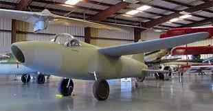

Pesawat Pertama
Tahun 1903
Dua bersaudara dari Amerika Serikat, Orville dan Wilbur Wright, membangun pesawat berbilah dua dengan mesin 12 hp. Mereka menyebutnya selebaran. Wright mengundang media dan masyarakat umum untuk uji terbang di Kitty Hawk Hill pada 17 Desember 1903. Dengan pilot berbaring di bawah sayap, pesawat dapat terbang pada ketinggian 36 meter selama 12 detik. Keberhasilan ini dipandang sebagai tonggak baru dalam pengembangan pesawat bersayap dan bermesin.
Tahun 1904
Pada tahun 1904, sebuah makalah tentang konsep sayap tetap pesawat modern diterbitkan di Jerman. Karya Profesor Ludwig Prandtl dipandang sebagai tonggak baru dalam teknologi aerodinamis (ilmu gesekan udara dalam benda padat). Fixed-wing adalah konsep yang memungkinkan pesawat terbang tanpa sayap karena dapat menyeimbangkan gesekan udara. Teknologi ini meningkatkan daya angkat pesawat.
Tahun 1908
Empat tahun setelah karya Prandtl diterbitkan, Dreiflugler diperkenalkan di Prancis. Penambahan sayap dirancang untuk meningkatkan performa dan kemudahan pengendalian, namun teknologi itu ternyata tidak membantu. Bahkan justru menyulitkan pilot bermanuver .
Tahun 1910
Untuk pertama kalinya dalam sejarah, sebuah pesawat bersayap tunggal yang mendarat di permukaan air pada tahun 1910. Pesawat ini dinamai menurut pabrikannya, Fabre Hydravion. Pada saat yang sama, Andre Billing memperkenalkan mesin simulasi pesawat pertama.
Tahun 1933
Dengan berakhirnya Perang Dunia I, teknologi pesawat terbang, terutama pesawat dengan dua orang atau lebih, berkembang pesat. Boeing, produsen pesawat Amerika, memperkenalkan pesawat komersial pertama pada tahun 1933. Diperlukan dua pilot untuk menerbangkan dan mendaratkan pesawat ini. Pesawat ini memiliki mesin kembar dan sayap tunggal.
Tahun 1937
Mesin jet ditemukan oleh orang Inggris Frank Whittle pada tahun 1930, tetapi sampai tahun 1937, semua pesawat modern masih menggunakan baling-baling. Pengembangan pesawat jet dimulai pada tahun 1937. Dua tahun kemudian, sebuah pesawat yang dilengkapi dengan mesin jet bisa terbang. Penggunaan mesin jet telah mengubah bentuk sayap. Sayap tidak lagi berbentuk persegi panjang. Tepi yang agak lonjong, tepat di bawah atau tepat di bawah batang tubuh. Pesawat ini dikenal sebagai Heinkel HE 178 dan diproduksi oleh perusahaan pesawat Jerman Heinkel.
Tahun 1947
Pesawat ini bisa terbang lebih cepat dari kecepatan suara. Bell X1 adalah pesawat supersonik pertama di dunia. Penerbangan pertamanya berlangsung pada 14 Oktober 1947 oleh pilot Amerika Chuck Yeager. Pesawat supersonik yang terkenal adalah Concorde, perusahaan patungan antara Inggris dan Prancis.
Tahun 1949
Setelah Perang Dunia II, Inggris mengembangkan pesawat jet untuk tujuan komersial dan berhasil mengembangkannya dengan dukungan pabrikan pesawat De Havilland Inggris. Comet De Havilland pertama kali terbang dari London ke Afrika Selatan pada Juli 1949.
Tahun 1967

Pesawat ini telah menjadi tulang punggung penerbangan regional Indonesia (penerbangan jarak pendek dan menengah yang dapat menampung 35.100 penumpang) sejak tahun 1971. Pesawat pertama terbang pada 9 Mei 1967 dan dengan cepat mendapat perhatian dunia. Beberapa maskapai di seluruh dunia menikmatinya, termasuk Garuda Indonesia. Fokker 28 diyakini sesuai dengan karakteristik landasan pacu Indonesia yang belum sepenuhnya beraspal. Pesawat ini terakhir terbang di Indonesia pada tahun 2001.
Tahun 1970
Menilik kesuksesan perusahaan pesawat Fokker, Boeing pun tak mau kalah. Pesawat penumpang terbesar di dunia diperkenalkan pada tahun 1970. Pesawat dengan panjang 70 meter dan lebar 59 meter ini dikenal dengan jumbo jet. Pesawat ini terbagi menjadi dua deck/lantai. 747 yang dapat menampung 400 penumpang, tetap menjadi pesawat yang beroperasi paling lama. Sebagai rival Boeing, Airbus tak mau kalah. Setelah membangun B707 terbesar pada masanya pada tahun 1969, Boeing membangun B747. Itu bahkan lebih besar dan pada tahun 2005 itu adalah pesawat terbesar dalam sejarah. Kemudian, Airbus membangun A380 raksasa. Versi standarnya memiliki 854 kursi penumpang, yang akan menjadi 525 jika dirancang untuk tiga kelas, yakni Eksekutif, Bisnis, Ekonomi.